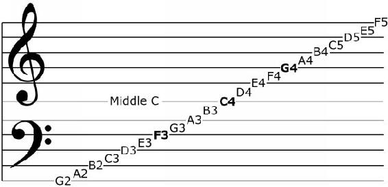

As we have said before, treble and bass clef together form the grand stave (also known as the grand staff), which can be commonly found on music sheets. The goal of a grand stave use is to minimize the use of ledger lines and make the written music more easily readable.
The grand stave covers a wide range of note pitches and it is useful for instruments such as pianos. Instead of 5 we now have 10 staff lines plus the invisible line (normally not shown). The invisible line represents the middle C note (C4) and it connects bass and treble clefs. To demonstrate this visually check out the figure below.

Figure 2.6. Note that on the spaces around middle C there are two more notes connecting the bass and treble clefs: B3 and D4. When playing piano the bottom staff is usually played with the left hand and top staff is usually played with the right hand.
The modern staff has only five lines and even with the use of ledger lines the number of pitches that can be represented on the staff is not nearly enough to cover all instruments or what an entire orchestra can produce. Likewise, if we use only clef it would be difficult to write music for all instruments and voices. That’s why the use of 3 different clefs (along with their sub-types) for various instruments and voices allows everything to be comfortably on the staff with the minimum use of ledger lines.